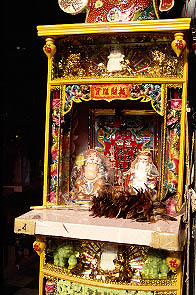
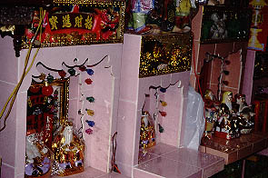
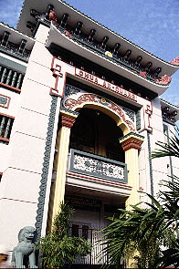
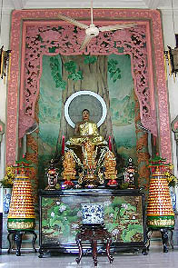
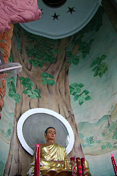
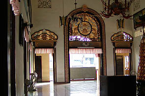

ChuaAnQuang/T.P.HoChiMinh
印光寺/ホーチミン
さ〜て、いよいよホーチミン市である。
佃煮に出来る程のバイクの群れが道を占領する活気がありすぎる都市。
新年の「全市民参加あけましておめでとう暴走」などはもう正気の沙汰とは思えませんでした。
だがその一方で仏教寺院の方もイケイケ汁あふれまくりの暴走状態。誰も彼らを止められません。
そんなホーチミン市の寺巡りは中心街からチョロン寄りの印光寺から始める。
っと、その近所にあった仏壇屋で早くも寄り道。
 
ウットリするような素敵な仏壇。というか何か商売の神様的なもの、日本でいえばエビスさんやお稲荷さんのような神様をまつる祭壇。
素晴らしく派手でファンキー、是非お土産に購入したかったところだがこんなモノを背負って寺参りをするわけにもいかず泣く泣く断念。
出来る事なら店ごと購入したかったが返す返すも残念である（ちょっと嘘）。
で、仏壇屋に気をとられて道に迷ってしまった。
目指す印光寺は近くにあるはずなのだがどこにも見当たらない。
道端に座り込んでいるオバハンに聞くと「知らん」という。
しかし「知らん、けど1ドルくれても良いよ」という素晴らしい要求を付け加えてくるのを忘れない。
あまりに堂々と請求するので思わず払いそうになっちゃいました。
で、オバハンからわずか2メートル先の角を曲ったら印光寺の建物が見えて来た。
・・・頼むよオバハン。ってゆうかこんな近くで道を聞いた私が悪いんです。ハイ・・・

で、印光寺。
いかにも都会の寺院らしく狭い敷地に大きな建物が建っている。
中央にあるメインの本堂の他にも僧侶が学ぶ学校や僧侶の住居などが密集している。ホーチミンの寺では2階がメインスペースで1階は食堂、その奥に別棟で坊さんの居住スペースがある、というパターンが多かった。
外観はやっぱり寺院なんだか中華料理屋だか中華風ホテルなんだか良く判らない。
外から見る限りでは何となくニセモノ臭い感じの寺である。勿論れっきとした仏教寺院だし、それ以上に南ベトナムを代表するような立派な寺だったりするのだがそんな立派さを微塵も感じさせてくれないところが普段の修行の賜物なんでしょうか。

タイルモザイクで書かれた「印光寺」という文字がカッコ良い。一旦裏手に回り2階に上る。そこがこの寺のメインホールだ。
広々としたホールの正面には祭壇がしつらえてある。
 
そこには仏像がまつられており、その後ろには菩提樹だろうか一本の木が描かれている。
丸い壁面に書かれていて上は丸いドーム屋根になっている。何だか学芸会っぽくて凄く良い感じだった。

2階のメインホールのテラスから下を見る。下町風の雑踏の中に建つ寺院であることを改めて実感する。
路上でメシを食うオヤジ、走り回る子供、物売り、物乞い・・・
門前にたむろしているバイクタクシーの運ちゃん達がこちらに熱い視線を送っている。おお、俺は檻の中のパンダかっつーの。
あ、さっきのオバハンが運ちゃん達と喋っている。しかも私を指差して笑っている。
「アイツはすぐそこでこの寺はどこかと聞いて来たアホタレだ。きっとカモネギに違いないぞ。」と言っているに違い無い。
この寺を出た時の私の人気っぷりが眼に浮かぶぜ。いえ〜い(涙）
次へいきましょう
越南珍寺劇場
珍寺大道場 HOME